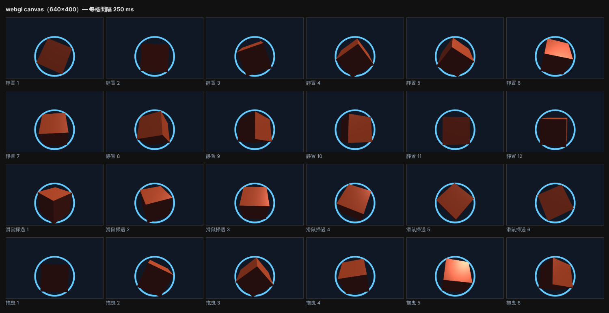
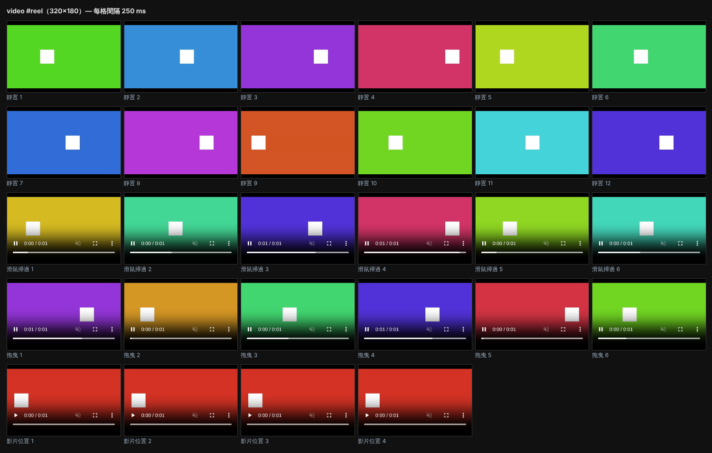

Motion starter — 127.0.0.1:4174
Each block runs a starter for one observed element. Compare it with the reference filmstrip underneath, then refine motion.css / motion.js.
motion-t0 — kind: webgl; size/position: 640×400px, about 12% down the page; animates by itself
motion-t1 — kind: video; size/position: 320×180px, about 73% down the page; animates by itself